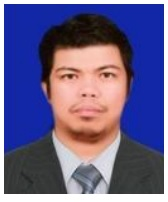

Rommel Fortuno Aunario | WDD 130
Hello everyone! I am brother Rommel Aunario. Let me introduce a little bit about myself. I am one of six children. I am a member of The Church of Jesus Christ of Latter-day Saints living in the Philippines. Currently, I am the 2nd Counselor in the Elders Quorum of our Ward. I served my mission in the Philippines in 1999. My hobbies include playing the guitar, singing and writing songs, and playing chess. I am super excited about starting web development class, and it feels like a cool adventure awaits. I hope you had a Merry Christmas, and I am wishing everyone a Happy New Year ahead! Looking back, I'm grateful for the festive season, and I'm now eager to dive into the learning and discovery that lies ahead in the web development journey!